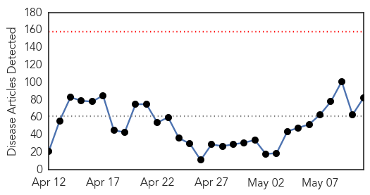
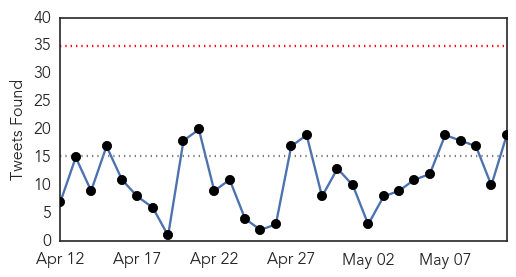

West Nile Virus
30-Day Web Trend
1 alerts, 5 warnings

30-Day Twitter Trend
0 alerts, 0 warnings

Article Locations

Article Confidences

Top Articles:
- 0.997
- West Nile, more than a river in Egypt
- 0.987
- STONE: Recent rains bring threat of mosquito-borne illnesses
- 0.985
- Biting back: Scientists aim to forecast West Nile outbreaks
- 0.977
- The High Cost Of Treating People Hospitalized With West Nile Virus
- 0.642
- Despite Spread of Lyme Disease, Massachusetts Dedicates No Money to Prevention
Top Tweets:
-
No tweets found for May 11, 2015
Ebola
30-Day Web Trend
0 alerts, 0 warnings

30-Day Twitter Trend
0 alerts, 0 warnings

Article Locations
Article Confidences
Top Articles:
- 1.000
- Liberia Ebola-free, but 'can't relax yet,' WHO says
- 1.000
- Liberia declared free of Ebola but officials warn against complacency
- 1.000
- Ebola Outbreak in Liberia Has Officially Ended
- 1.000
- The Ebola outbreak in Liberia is over
- 1.000
- Liberia declared Ebola-free, but outbreak continues over border
- 1.000
- Liberia declared Ebola-free as panel reviews WHO response
- 0.999
- Liberia declared Ebola-freed
- 0.999
- Canada drops visa ban for Liberia after declaration country is Ebola free
- 0.999
- Liberia Declared Ebola-Free, but Outbreak Continues in Guinea and Sierra Leone
- 0.999
- Ebola outbreak is over in Liberia
- 0.999
- Live Ebola virus detected in survivor's eye months after recovery
- 0.999
- How Liberia Finally Got Rid Of Ebola
- 0.999
- Liberia declared Ebola-free
- 0.999
- As Liberia Earns 'Ebola-Free' Designation, A Look Back On The Lessons Learned
- 0.999
- Panel calls for change at WHO after slow response to Ebola
- 0.999
- Liberia Declared Ebola-Free After Weeks of No Cases
- 0.999
- World Health Organization: Liberia Is Now Ebola-Free
- 0.999
- WHO declares that Liberia is officially free from Ebola epidemic
- 0.998
- President Sirleaf Officially Receives the WHO Ebola-free Declaration;Notes that the Challenge Now is to Work with the Other Two Affected Countries
- 0.998
- Ebola survivors urged to use condoms
- 0.997
- Liberia declared free from Ebola - Business News
- 0.997
- WHO declares Liberia Ebola-free
- 0.996
- Liberia is FREE of Ebola as thousands gather in the streets to celebrate
- 0.995
- Ebola: How Liberia ended 7 months of nightmare
- 0.993
- International Association of Religion Journalists
- 0.993
- Panel calls for change at WHO after slow response to Ebola
- 0.992
- A Conversation with Dan Edge
- 0.992
- One Year Later, Ebola's Lessons for the Next Big Outbreak
- 0.992
- Panel condemns lethargic WHO response to Ebola outbreak
- 0.991
- After Ebola outbreak, expert panel urges ‘single, unified entity’ within UN health agency for emergency response - World
- 0.988
- UPDATE: UVA Medical Center Patient Tests Negative for Ebola
- 0.987
- The Liberian Observer
- 0.984
- Y's Men hear about coping with the Ebola crisis
- 0.984
- Ebola Present in Eyes Even After Blood Test Clears Patient
- 0.979
- Experts: WHO needs deep reforms after failing on Ebola
- 0.976
- Occupational Health and Safety: Role of Liberian Colleges and Universities in Post-Ebola Liberia
- 0.966
- Statement on the World Health Organization’s Announcement on Liberia
- 0.960
- Patient at UVA Medical Center does not have Ebola
- 0.957
- International Expert Panel Analyzes WHO’s Delayed Response to Ebola Epidemic
- 0.952
- Ebola Survivor Tells Graduates Not To Forget The Big Picture
- 0.952
- Sierra Loene News: As they bid farewell…No AU member contracted ebola -Nigerian Medics « Awoko Newspaper
- 0.950
- Ebola Is Nearly Gone And Largely Forgotten. Thank The Government, Says Ebola Czar.
- 0.950
- Politico SL News Return of Kenya Airways in doubt
- 0.946
- Report: WHO needs reform over Ebola crisis
- 0.943
- Liberian Leader's ‘Letter To The World’ Replete With Thank You
- 0.942
- Ellen’s Triumphant Post Ebola Tour
- 0.941
- USA commends Liberia on its Ebola-free status
- 0.925
- Statement on the World Health Organization's Announcement on Liberia
- 0.925
- Rift Valley fever virus' proteins imitate human DNA repair factors
- 0.924
- Politico SL News FBC graduation, no handshakes
Showing top 50 articles...
Top Tweets:
- 0.947
- Ebola Outbreak Over In Liberia Not So In Sierra Leone Guinea - NPR http://t.co/v89nbwq8rN ebola EVD
- 0.827
- Ebola: WHO recognises responsibility in the slow response to epidemic - International Business Times UK http://t.co/SacPtAgcZT ebola EVD
- 0.813
- RT: Liberia now 42 days without an Ebola case. These schoolchildren hope Sierra Leone gets there soon http://t.c…
- 0.799
- Patient with possible Ebola symptoms being monitored at UVA Medical Center - WRIC http://t.co/s13IgKyXOX ebola EVD
- 0.714
- RT: Celebrations in Monrovia of Liberia being declared Ebola free by the World Health Organization. We… https://t.co/xlzCrNWdtB
- 0.711
- RT: Key to preventing next health disaster is building resilient health system. @nytimes: Ebola-Free but Not Resilient h…
- 0.708
- RT: WHO declares the end of the Ebola outbreak in Liberia Liberia StaysVigilant http://t.co/WHPr2dT3xJ
- 0.678
- RT: Liberia is free of Ebola for now. But the fight is not yet over in Guinea & Sierra Leone. See this PSA: http://t.…
- 0.647
- Ebola virus disease: from epidemiology to prophylaxis http://t.co/2NKbgmWvAL
- 0.626
- Liberia Ebola-free decreasing cases in S.Leone & Guinea. Zero cases only possible if control efforts are maintained http://t.co/OfhfURUyz0
- 0.624
- Liberia Completes Phase Two of Ebola Virus TrialVaccines http://t.co/99dm42puMZ
- 0.616
- Liberia churches celebrate end of Ebola - Sentinel-Tribune http://t.co/aVPu8ttq02 ebola EVD
- 0.611
- Drug target for Ebola-like viruses identified - Zee News http://t.co/qPHWAfOFB8 ebola EVD
- 0.585
- One Year Later Ebola's Lessons for the Next Big Outbreak - Wired http://t.co/b5VBZqlSSo ebola EVD
- 0.568
- One case of Ebola is still too many. The game's not over in Sierra Leone or Guinea: https://t.co/Px8cyh2hC7 … @mbahamoute
- 0.539
- The Ebola outbreak in Liberia is over 9 May 2015 ebolafree http://t.co/9I2nUrwFp9
- 0.527
- How Ebola can hide in the body - AOL News http://t.co/pZCSC3OnQM ebola EVD
- 0.512
- RT: @AfricaAgstEbola "the Ebola stigma vaccine" https://t.co/d6kyI0TuRN
- 0.511
- Estimating the basic reproductive ratio for the Ebola outbreak in Liberia and SierraLeone Transmissionmodel http://t.co/AyHh4yr9l2